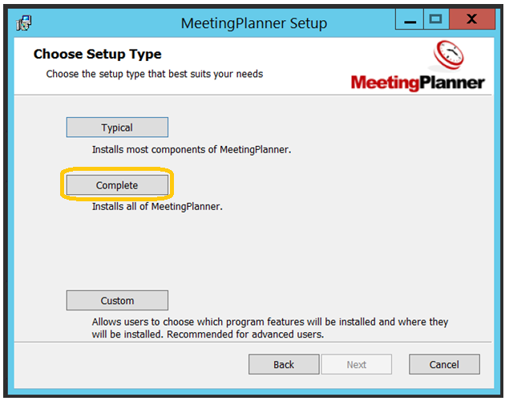
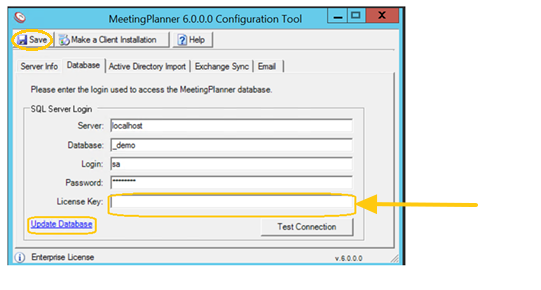
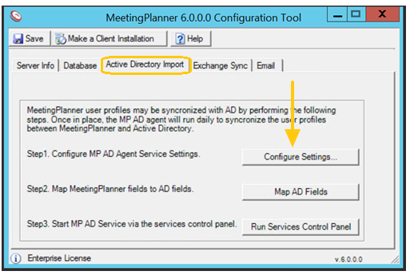
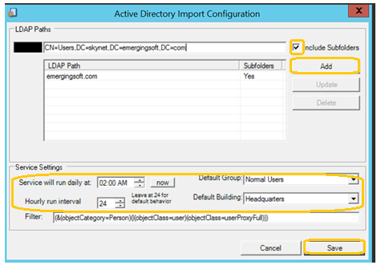
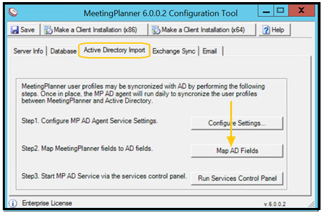
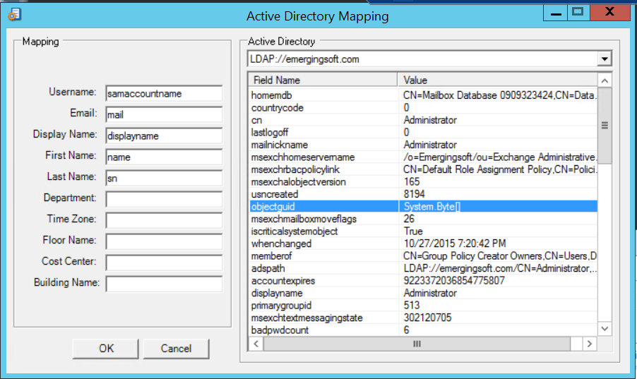

Installing Meeting Planner
IMPORTANT: To install MeetingPlanner, the database backup file must be restored.
The MeetingPlanner Installer must have the following data from the pre-installation:
- database name (ie. MeetingPlanner)
- MeetingPlanner login and password credentials
- EWS URL
- EWS Service Account
- SMTP address for each room utilized in MeetingPlanner
Application Server Installation
- Download the MeetingPlanner.msi to the server from the support portal.
- Double click on the MeetingPlanner.msi to execute.
- Select Next to proceed to the EULA once the installation wizard opens.
- Read the EULA and check to accept the terms in the license agreement.
- Select Next.

- Select Custom to proceed to choose the components that are required.

- Select Next.
- Select Install.
- Enable Launch Configuration Tool when setup exits and select Finish.

Connect to the SQL Sever Database
- Go to your sever desktop.
- Select the Configuration Tool.
- Select the Database tab.
- Enter the SQL Server name (e.g., Localhost).
- Enter the Database name: (e.g., MeetingPlanner).
- Enter your login and password.
- Copy and paste the license key provided.
- Select Update.
- Select Save.
- Select Test Connection.

Active Directory Import
The Active Directory Sync service acts to create and maintain MeetingPlanner profiles for users in Active Directory. This is an optional service (users can be created and maintained manually) that is available, free of charge, with any MeetingPlanner installation.
IMPORTANT: Prior to starting the service, the MeetingPlanner Installer must go to Application>Users&Groups>User General Settings and update the Default Time Zone, as this will be the timezone set for all users imported through this service.
Active Directory Configuration
- Open the MeetingPlanner Configuration Tool from the application server.
- Navigate to: Start > All Programs > EmergingSoft > MeetingPlanner Configuration Tool > Active Directory Import.
- Select Configure Settings.

Configure Active Directory Settings
- Enter the LDAP path (Distinguished Name) of the CN or OU you would like monitored by the service.
NOTE: If you are having trouble determining the path, consider making use of the Microsoft ADSI Edit tool.
- Select Include Subfolders (if applicable).
- Select Add.
NOTE: Multiple paths can be entered.
- Set the Service Settings:
- Service will run daily at: The service runs once daily; this is where the run time is set.
- Default Group: All users are required to be part of a MeetingPlanner group. Once users are created, as members of the Normal Users group in this case, administrators will be able to add them to different groups to provide additional MeetingPlanner privileges if necessary.
- Default Building: Users can be automatically assigned a default building. Other options include 1) connecting a field in AD to map default buildings to user profiles (if that is currently done in your AD), 2) having an administrator set default buildings for users, or 3) by the users themselves by visiting MeetingPlanner > Preferences.
- Select Save.

Map AD Fields
- Select Map AD Fields.

- View the AD Mapping page. Columns on the left represent MeetingPlanner profile attributes. Columns on the right represent Active Directory user properties.
- Drag AD fields into the textboxes on the left to associate the AD fields with MeetingPlanner fields as described in the table below.
IMPORTANT: If the Active Directory properties do not populate in the columns on the right, please go back to the previous step and revise the LDAP path. This means that no user accounts were found.

| fields | DESCRIPTION |
|---|---|
| Username | Windows login name - typically 'samaccountname' (Mandatory) |
| Email address - typically 'mail' (Mandatory) | |
| Display Name | Display name in MP - typically 'displayname' (Optional) |
| First Name | First name - typically 'givenname' (Optional) |
| Last Name | Last name - typically 'sn' (Optional) |
| Time Zone | Default timezone (three letter code, e.g. "CST") - typically not mapped (Optional) |
| Building Name | Default building, which would correspond to the Building EID field in MeetingPlanner - typically not mapped (Optional) |